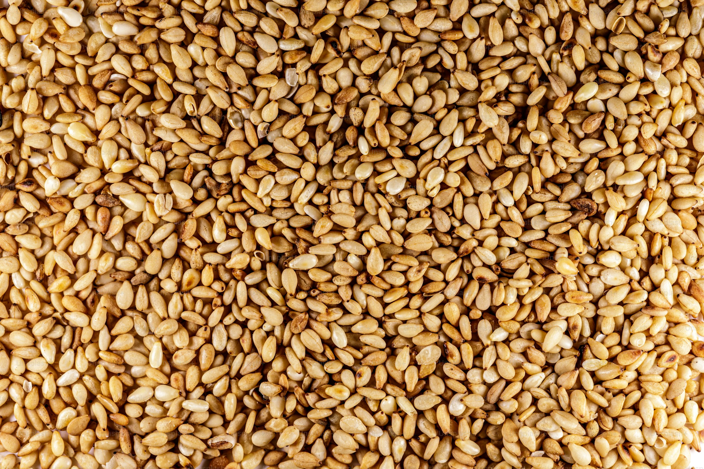
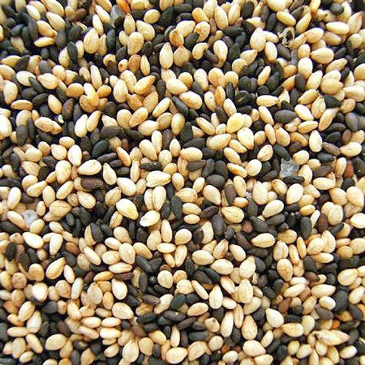
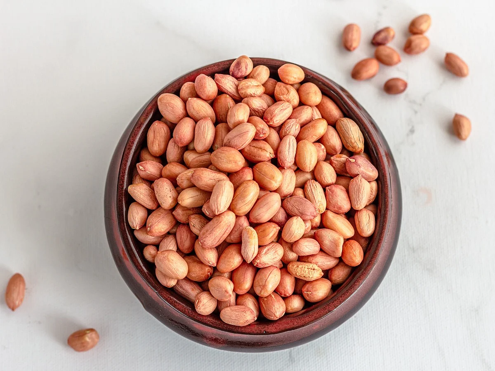

سمسم ابيض

بذور سمسم بيضاء عالية الجودة، منظفة جيدًا ومفرزة بالألوان. منتجنا الأكثر تصديرًا إلى آسيا والشرق الأوسط.
عرض المزيدسمسم بني
بذور سمسم بنية بطعم ترابي وغنية بمحتواها الزيتي، يتم حصادها من مزارع محلية ومعالجتها بدقة.
عرض المزيدسمسم مخلوط
مزيج متوازن من السمسم الأبيض والبني للعملاء الباحثين عن خلطات مخصصة. منظف ومفرز وفقًا لأعلى المعايير.
عرض المزيدفول سوداني
فول سوداني مزروع محليًا، مفرز حسب الحجم والجودة. مثالي لاستخراج الزيت وإنتاج الوجبات الخفيفة.
عرض المزيدصمغ هشاب

صمغ عربي طبيعي ممتاز الجودة، يتم حصاده بعناية من أشجار الأكاسيا السنغالية. يتميّز بجودته الفائقة، ووضوحه، وسهولة ذوبانه — ويُستخدم على نطاق واسع في الصناعات الغذائية والمشروبات والأدوية.
عرض المزيدصمغ لبان

صمغ اللبان الممتاز، يتم حصاده بعناية من أشجار اللبان الطبيعية. يحظى بتقدير واسع لرائحته العطرية، وفوائده الطبية التقليدية، واستخدامه في البخور، ومستحضرات التجميل، والعلاجات العشبية. يتم تصديره وفق أعلى المعايير لتلبية الطلب العالمي
عرض المزيد